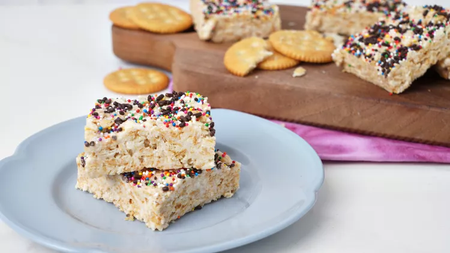

Ritz Crispy Treats

Description
These Ritz crispy treats are a magical mix of buttery crackers and buttery marshmallows, almost like a grown up version of the old school Rice Krispie treat.
Sweet, salty, chewy, and a little crunchy—these are indeed a bit more indulgent than the original, but so worth it!
Ingredients
- 80 round buttery crackers, such as Ritz crackers
- 1/4 cup butter
- 1(10 ounce) bag mini marshmallows
- 1 teaspoon flaky salt
- 2 tablespoons chocolate sprinkles, multi-colored sprinkles, or other sprinkles as desired
Steps
- Crush crackers finely into a medium bowl. Melt butter in a large pot over medium-low heat. Add marshmallows and cook, stirring constantly, until melted. Remove from heat and stir in crushed crackers.
Working quickly, coat all of the crackers with the marshmallow mixture.
- Pour mixture into an 11x7-inch (3 quart) baking dish. Lightly coat the back of a spoon or hands with cooking spray and press mixture firmly and evenly into the baking dish. Alternatively, use a small sheet of wax paper to press the mixture into the pan.
- Top immediately with flaky salt and sprinkles. Let stand 30 minutes at room temperature, and then refrigerate 15 minutes before cutting into 12 to 16 squares.